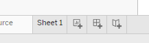

No feedback found for this session
Tableau for Beginners (session 2)
Tableau
beginner
Warning
This is currently a draft version of the materials for this training session, and so may contain minor errors and inaccuracies.
Session outline
Visualisation overload!
- we’re going to build several visualisations
- we’ll use some tidied data for this - today is all about using data to do interesting things
- next time, we’ll get into the data wrangling needed to sort that data out
Session files
Today’s visualisations
- line graphs
- filtering tools
- numeric summaries of data
- maps
- column charts
The goal for this week
Data loading
- this is a repeat of last week
Task
- go to https://public.tableau.com/app/
- select
Web Authoringfrom theCreatemenu - from the
Datamenu, selectNew Data Source - drag and drop (or use the upload button) to add the
s02_service_data.xlsxfile - drag the
weekend_shsheet into the data model
Service use data (weekend_sh)
Task
- add a worksheet 
- go to that worksheet, and make a time-series graph from our data by dragging the
Dateand theMeasure valuesfields to the shelf, and ensuring that data is set toExact date: - you might also switch off the values to avoid clutter
Measure Value
-
Measure Valuesare a default calculated field derived from your data. You can think of it as containing all your numeric values- you’ll see that you can edit what appears in your graph - and do please remove the
CNT(weekend_sh), which is just counting values
- you’ll see that you can edit what appears in your graph - and do please remove the
- there’s also a
Measure Namesfield which collects together all your measure names (like Excel column names)- when we add
Measure Valuesto our graph, theMeasure Namesappear in theFiltersarea
- when we add
Add a filter
Task
- drag the
Datetable into theFiltersarea. You’ll be asked to choose a way of filtering that data: selectRange of Dates - that will produce a filter preview:
- add it to your graph by selecting
Show filter - now repeat for the
Weekendtable
A digression: icons, dimensions and measures
- you might have noticed that your fields have coloured icons:
- each type of icon represents a data type (like text, numeric, etc)
- the colours group those types into continuous/discrete: blue = discrete data, green = continuous data
- But there’s also a Tableau-specific pair of terms in play here:
DimensionsandMeasures- Dimensions are (usually) qualitative categories used to control the level of detail shown - like our
Measure Names - Measures are quantitative values, which make up the values shown on our visualisations - like our
Site B
- Dimensions are (usually) qualitative categories used to control the level of detail shown - like our
Numeric summaries
Task
- start a new worksheet
- our dimension for the summary will be
Weekend- drag that to theColumnsshelf - our measure for the summary will be our several site columns - so (as before) add the
Measure Namesto theRowsshelf, and then theMeasure Valuesto theTextmark - do minor surgery:
- remove the count of weekend days
- produce an average
- format the numbers appropriately
- improve the worksheet title
Putting everything together
- we’ll use a dashboard to assemble the plot, and the summary table
Task
- create a new dashboard from the row at the bottom of the screen
- double-click your Sheet 1 to add the graph

- you can then drag your Sheet 2 into the blank space under the filters to add your summary table
- you might also take the chance to rename your graph (and the dashboard as a whole) to something less drab:
- finally, hit publish and check your dashboard online in your profile
GP practice size
- this dashboard shows Scotland’s GP practices
- it’s based on the GP Practice Contact Details and List Sizes dataset published by Public Health Scotland
Task
- select
New Data Sourcefrom the menu - from the
s02_gp_data.xlsxfile, addgp_size_shto your data and start a new worksheet - drag the
LatitudeandLongitudefields to the column/row shelf. Avoid theLatitude (generated)andLongitude (generated)fields - they won’t work properly - now drag the size
List Sizemeasure to theSizepart ofMarks- You might want to twiddle the
Mark Sizeoption to make sure your practices appear at the right scale
- You might want to twiddle the
- drag the
HB Namedimension to theColourpart ofMarks - finally, drag the
Namefield to theDetailpart ofMarks
About postcodes
Note that Tableau Public doesn’t play nicely with UK postcodes. It will recognise them, but they won’t plot properly on a map. British postcodes, properly speaking, don’t describe a location at all. Instead, they’re just code numbers for different buildings. Here, we estimate the position of each postcode by taking an average of the location of each building to which it refers. That’s known as a centroid, and this data contains latitude and longitude data for each postcode centroid, which is produced using the PostcodesioR R package.
Why not add both datasets at once?
- if you add several datasets in one go, Tableau will automatically try to create relationships between them, and (in Tableau Public at least) it doesn’t seem possible to avoid this happening
- in this case, we definitely don’t want this to happen. Our made-up service data, and our real GP data, don’t share anything in common
- so adding a new data source once we’ve already done some work on the data is a hack-y way of giving you two independent data sources without pain
Adding a column graph of practice sizes
Task
- as usual, make a new sheet
- add:
- the
Namefield to theColumnsshelf -
List SizetoRows -
HB NametoColour
- the
- then adjust the
Sortoption inNameto arrange your practices in descending order of size - you might also like to filter the
Namefield to just show the largest 50 practices - Finally, add both this worksheet and your map to a new dashboard page
Homework tasks
- Is there any relationship between practice size and SIMD2020 deprivation scores in the GP data? How could you show that relationship in a visual?
- Is there any month-to-month or seasonal change in the weekend service use data? How could you show that relationship in a visual?